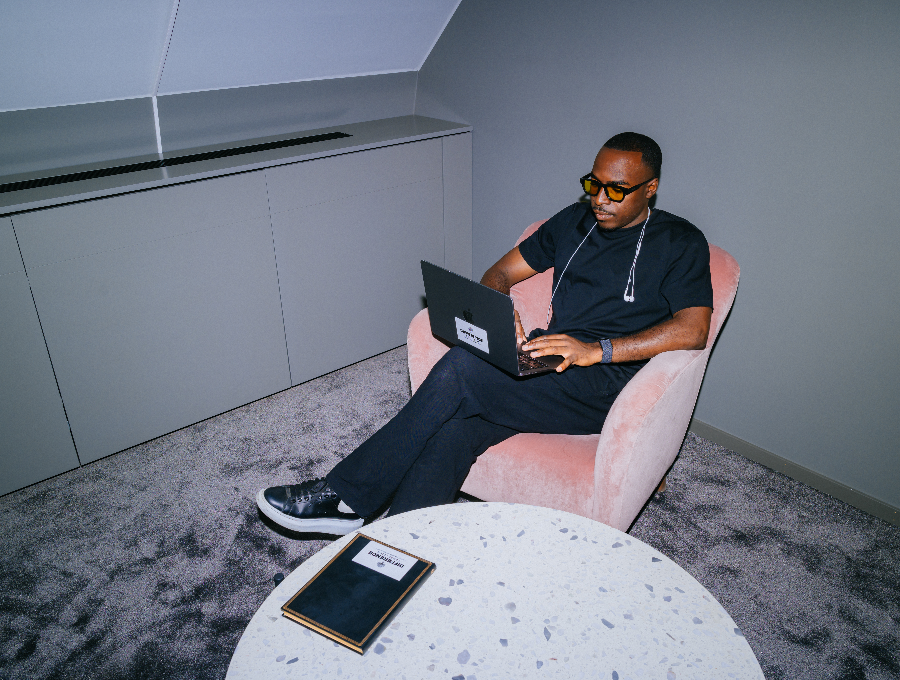
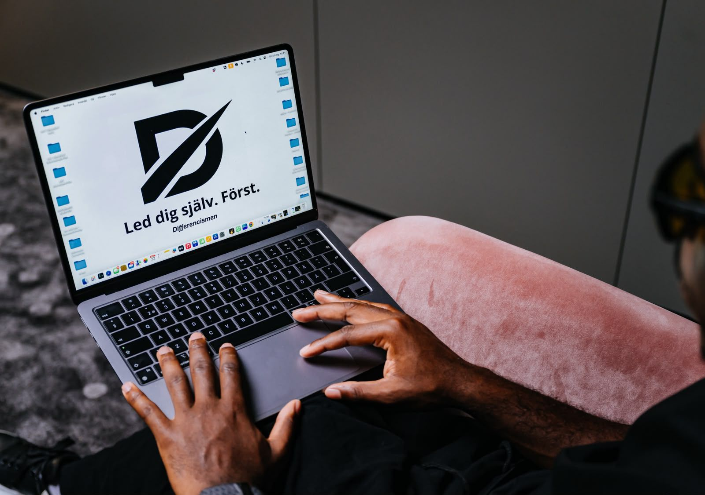

Individuell vägledning.
Personlig vägledning i självledarskap med Rickson Mansiamina.
Du vill framåt. Samtidigt kanske tankarna tar över, andras förväntningar väger tungt eller samma situation fortsätter att återkomma.
Du kan också vara på en bra plats och vilja förstå vad som fungerar, så att du kan fortsätta med det.

Du får utrymme att tänka högt.
Jag lyssnar, ställer frågor och utmanar dig där det behövs. Vi tar oss tid att förstå dig, dina styrkor och sammanhanget du står i.
Ur samtalen väljer vi vad som behöver få din uppmärksamhet och vad du ska pröva i vardagen.
Det vi pratar om följer med.
Du får ett eget digitalt Träningsfält med ditt aktuella fokus, sammanfattningar och personligt material.
Det hjälper dig att förbereda dig inför situationer och reflektera efteråt. Det kan handla om ett samtal du behöver ta, hur du möter en förändrad roll eller vad du gör efter ett misstag.
Nästa gång vi ses tar vi vid i det som hände. Vad använde du? Vad hjälpte? Vad behöver du fortsätta träna?
Tidigare lärdomar finns kvar. När något återkommer kan vi se det i ett större sammanhang och följa hur du möter det över tid.
Vi håller också kontakt mellan samtalen enligt vårt överenskomna upplägg.

Du ska kunna använda det själv.
Vägledningen bygger på Differencismen och ska stärka din självkännedom och din förmåga att fatta egna beslut.
Det du lär dig ska gå att använda även när jag inte är med.
Så börjar vi.
I ett första samtal berättar du om din situation och vad du söker. Tillsammans ser vi om vägledningen passar och kommer överens om upplägget.
Om en klubb eller representant är delaktig tydliggör vi tillsammans med dig deras roll och vad som får återkopplas.